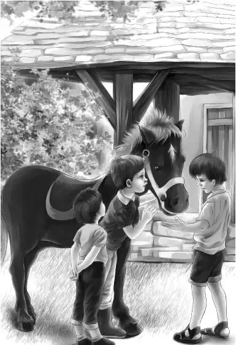

While the Aldens were at the glass factory， Benny was walking through the woods. The path was very poor. Sometimes he thought that he was not on the path at all—and he was right.
Benny knew that he was supposed to go a mile， but he knew that he had walked much further than that. After a while， he did come to a main road. He looked both ways. At last he saw a house almost hidden by trees. Two boys were playing in the yard.
Benny walked toward the boys and called， “Do you own a talking horse？”
“Yes， we do，” said the older boy. “Want to see him？”
Benny nodded. “Yes， that’s what I came for，” he said.
The boys led Benny to a large shed. The little boy asked， “How did you hear about old Major？”
“Mr. Shaw， the stationmaster at Pinedale， told me，” said Benny. “He said Major was a circus horse.”
“That’s right，” said the boy. “Cho-Cho the clown works for Mr. Shaw. He used to own our horse， but he sold him to us.”
The three boys stopped at the door of the shed， and sure enough， inside was the horse.
The big boy said， “Well， Major， are you glad to see this stranger？”
The horse tossed his head and looked at Benny. The boys took the horse out of the shed.
“Are you afraid of the stranger？” asked the boy.
Major shook his head from side to side. His beautiful white mane blew in the wind. Benny was delighted.
“Could I ask him a question？”
“Sure，” said the boy. “Maybe he will answer you.”
“How much are two and one？” asked Benny in a loud voice. The horse pawed the ground three times.
“Sit down， Major，” said the boy. The horse sat down like a dog.
“What do you want to do now？” asked the boy. The horse lay down on his side and shut his eyes.
“He’s a wonder，” said Benny. “I suppose you will never sell him？”

“Well， it’s possible，” said the boy. “Major is lonesome here. You’re the first visitor we have had for two weeks. Where are you going from here？”
“Back to the train，” said Benny.
“You’d better get going then，” said the boy. “The train may leave， and the path isn’t very good.”
“I think I lost the path coming over. My name is Benny Alden. Maybe I’ll write to you sometime. Is your name Cutler？”
The big boy said， “Yes. If you want to write about the horse， you’d better send the letter to my father. His name is John Cutler. Send it to Glass Factory Junction.”
Benny thanked the boys and turned into the woods. “Keep going right along，” called the smaller boy， “or you’ll miss your train.”
“I’ll go as fast as I can，” shouted Benny. “Goodbye！”
Benny could not see any path. He struggled through the bushes. Once he tripped and fell on a stone and cut his knee. At last he said to himself， “I’m certainly lost. But I know I’m going the right way toward the station.”
Soon the path was better， and he began to run. In a minute he saw a little house that he had not passed on his way to the Cutlers. On the step sat a little boy and his mother.
“Look， Mom，” said the little boy. “Somebody’s coming.”
Benny was very glad to see some people. He said， “I want to catch that freight train. Do you think I can make it？”
“No，” said the woman. “I’m sorry. We just heard one whistle already. When it whistles again， the train will start. You can’t go fast enough to catch it.”
“I have to go just the same，” said Benny. “I lost the path when I came over. It took me a lot longer than I expected.”
The boy said， “Did you go to see the talking horse？”
“Yes， I did，” said Benny. “He was fun， but now I’ve lost my family.”
The boy looked at his mother. Then he said， “I’ll go with you.”
“You don’t look old enough，” said Benny.
“Oh， yes， I am，” said the boy. “I know the way to the station anyway， and I know every single train that goes by.”
“Yes， he does，” said the woman. “In summer he hasn’t anything else to do except watch the trains.”
“Come on，” said the boy. He led the way， running.
Benny followed him as well as he could.
“What’s your name？” he called to the boy. “Mine is Benny Alden.”
“Charley Jackson，” said the boy， running faster. “Be careful！This is a bad place！” It was too late. Benny had tripped over a great bunch of vines and fallen again on his sore knee.
“I’m sorry，” said Charley， coming back. “I guess you’re not used to running in the deep woods.”
“No，” said Benny. “But I ought to have seen those vines.”
“You’re caught for sure，” said Charley. “This is what I use for a knife.” He took a thin flat stone out of his pocket. He started to cut one vine after another.
“Well， that stone is sharp，” said Benny.
“Yes，” said Charley. “I have to carry something. I’m always needing a knife in these woods. There you are. Pull your foot out now.”
Benny started to get up.
“Look out！Don’t touch that！” said Charley. “That’s poison ivy！”
“Oh， I see it is now，” said Benny. “I wasn’t even looking. A good thing you stopped me， because that stuff poisons me.”
When Benny was on his feet， the boys ran on.
“Don’t feel bad about falling，” Charley called back. “I’ve seen grown-up men fall down in here， going to see the talking horse. I know where you went this morning. You weren’t on the path at all. This is bad， but that is worse. Oh， oh！There goes the whistle again.”
“And now I’ve lost my train，” said Benny.
Charley slowed down. “What are you going to do？”
“Well，” said Benny， “I’ll have to go to the railroad station just the same. You see my grandfather and my big brother and two sisters are on that train.”
“Won’t they make the train wait for you？” asked Charley.
Benny shook his head. “No. I told them that when I came back I would take a nap. I told them not to open the door and wake me up. So they will think I’m sleeping in the caboose.”
“Caboose！” said Charley. “I never heard of such a thing—traveling on a caboose！”
The boys walked slowly now.
“Yes，” said Benny. “We are taking a trip in two cabooses. I’ve been trying to think what my grandfather will do when he finds I’m not there. I’m sure he will come back to this station. There’s no other place for him to go.”
“I guess you’re right，” said Charley. “That’s the only road except this path. This road just goes a long way around by Cutlers.”
“My family won’t know I am lost until it’s supper time，” said Benny. “Oh， boy， am I hungry！”
“What did you have for lunch？”
“I didn’t have any lunch，” said Benny.
“No wonder you’re hungry，” said Charley. “Do you like apples？”
“I love them！” said Benny. “I could eat about a dozen right now.”
The boys reached the station. The door was locked. The factory was shut， too. The train had gone.
“You sit down on the doorstep，” said Charley. “I’ll be right back.”
Off he ran into the woods. In no time he was back again with his pockets full of small red apples.
“Have an apple，” he said. “These are wild. Not very good.”
“They are delicious！” said Benny. “You eat some， too， Charley.”
“I had my lunch，” said Charley， “but it’s supper time now.” He took an apple.
The two boys sat on the steps of the station.
“Charley， did you ever hear of a clown named Cho-Cho and a diamond necklace？” Benny asked.
“Oh， yes. Everybody knows about that，” said Charley. “Cho-Cho used to own the talking horse. My father used to tell me all about it， because the police asked him to watch out for a thin man.”
Benny nodded. “And your father never found him？”
“No. That was a long time ago. I don’t think they’ll ever find him.”
The two boys went on eating apples. They waited and waited and waited.